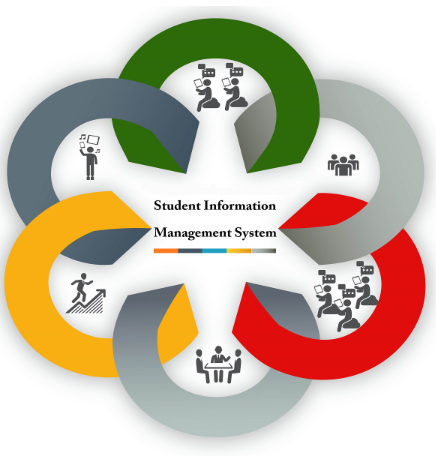

|
 |
WELL COME TO STUDENT INFORMATION MANAGMENT SYSTEM(SIMS) |
||
The Student Information Management System (SIMS) is a software application designed to manage and streamline the student data and administrative processes in educational institutions. It ensures the accurate storage, retrieval, and management of student information, including personal details, academic records, course enrollment, and results. Traditionally, student information is maintained manually, which is prone to errors, data loss, and inefficiency. The proposed system aims to automate these tasks to save time, improve accuracy, and support decision-making.It is an Integrated Software that automates the following Student related Business Processes of a University like: |
|||